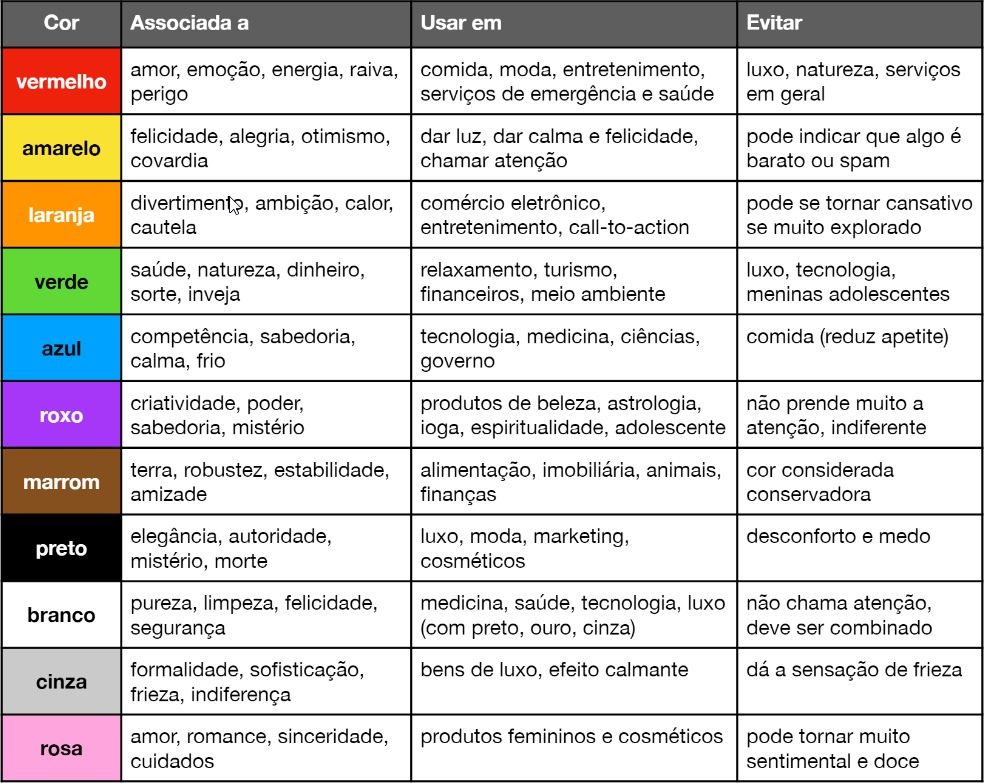

Página Nova
Tudo que aprendi!
Nesse meio tempo que não treinei eu aprendi muita coisa em CSS que é MUITO legal!. Como a pagina pode ver agr a página é colorida e bem aconxegante!
Cores
Neste tempo aprendi que as cores podem influenciar MUITO em uma pessoa e como elas podem ver seu site e tudo mais, tenho que treinar mais sobre para ficar bom pois isso pode ser um diferencial para quando eu me tornar um profissional.Tem essa parada aqui que é im pouco complexo de lembrar

Eu acho que é muita coisa para decorar mas qualquer coisa eu deixo aqui para lembrar é isso tem um nome, se chama PSICOLOGIA DAS CORES.
Tipografia
Eu sinceramente acheia essa parte MUITO chata aprender sobre letars é muito chatinho mas ao longo das aulas eu descobri que é muito importante para o design do site que estou criando.

Acho que basicamente é isso que eu aprendi, eu estou muito inconstante nas aulas e indo aos poucos, sinceramente eu estou um pouco de medo de tudo o que ta rolando mas to confiante que vai dar certo! Já evolui bastante da primeira página pra essa terceira e planejo melhorá-las constantemente.